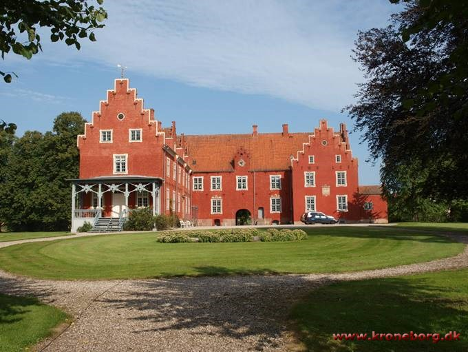

Astrup Gods hed tidligere Skarsholm og kan føres tilbage til omkring 1240.
Herregården Astrupgaard blev oprettet af nogle bondegårde i landsbyen Astrup. Gårdene var en del af det gods, som den danske kong Frederik III (1609-1670) gav til handelsmanden Gabriel Marselis, som havde ydet lån til kongen. Gårdene gik i arv til hans søn, Vilhelm Gyldenkrone, hvor de efter hans død i 1683 blev samlet til en gård og i 1699 solgt til Severin Rasmussen.
Severin Rasmussen kom dog ikke til at eje Astrupgaard længe, for i 1705 blev gården solgt af gårdens nye ejer Peder Lauritzen til Carl von Ahlefeldt.
Carl von Ahlefeldt ejede i forvejen Østrupgaard (senere Lerchenborg), og senest fra 1724 fungerede Astrupgaard som en avlsgård herunder. Under Carl von Ahlefeldts ejerskab blev Astrupgaards jorder udvidet med jord fra bl.a. Bjergsted og Skarsholm. I 1742 blev godset inklusiv Astrupgaard købt af general Christian Lerche, som blev en meget godsrig herre. Han oprettede grevskabet Lerchenborg, men Astrupgaard kom dog ikke til at indgå i selve grevskabet.
Astrupgaard var ejet af lensgreverne på Lerchenborg, men som en ikke-båndlagt ejendom, det såkaldte allodialgods, der i modsætning til herregårdene i grevskabet kunne omsættes i fri handel.
I 1852 blev Astrupgaard solgt fra grevskabet Lerchenborg. Ved lensgreve Christian C. Lerches død i 1852 arvedes grevskabet af hans ældste søn, mens Astrupgaard overgik til en søn af andet ægteskab Fr. F. Lerche. I 1881 solgte han Astrupgaard til sin bror, Vilhelm Lerche, der i forvejen ejede Birkendegaard. Ved hans død arvedes Astrupgaard af sønnen, Gustav Lerche. I 1907 kom gården igen under Lerchenborg.
Det varede dog kort. I 1910 købte Christian Lotzbeck Astrupgaard, og solgte syv år senere gården til Jens Schou, som var professor og dr.med. I 1934 solgte Jens Schou Astrupgaard til E. Gammeltoft-Schougaard, hvorefter Astrupgaard i 1952 blev købt af firmaet Poul Bergsøe & Søn.
I dag producerer godset svin.